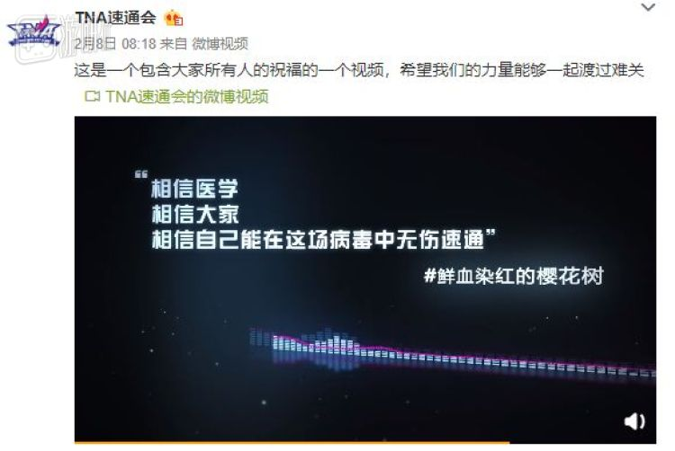
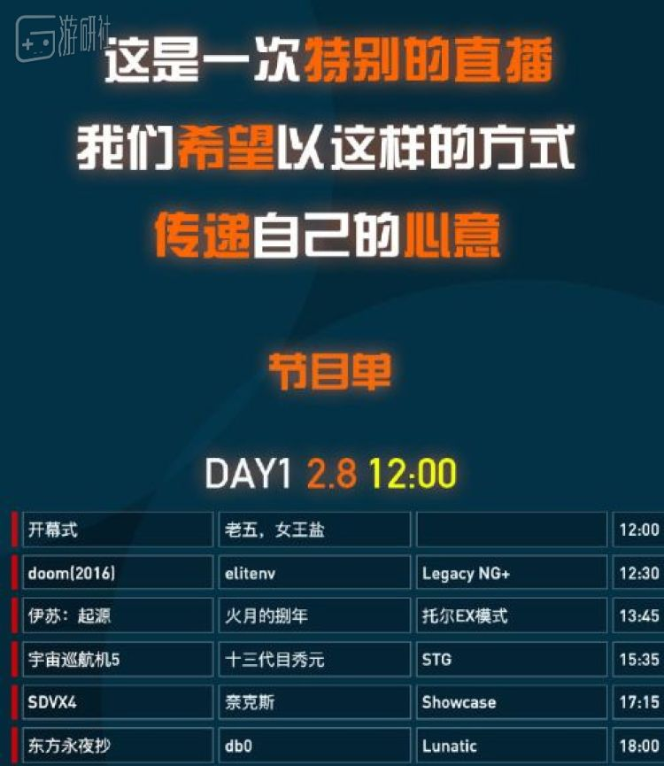
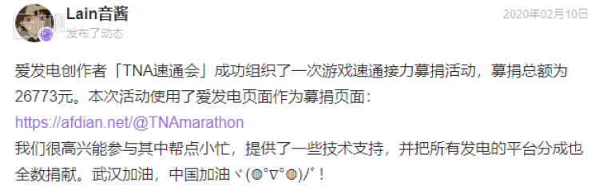
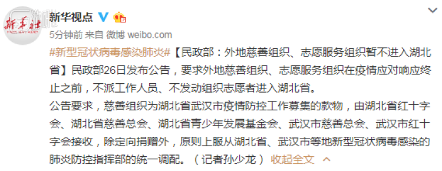
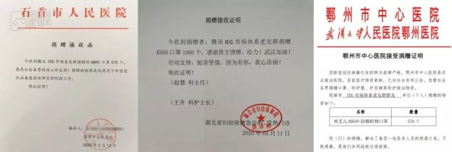
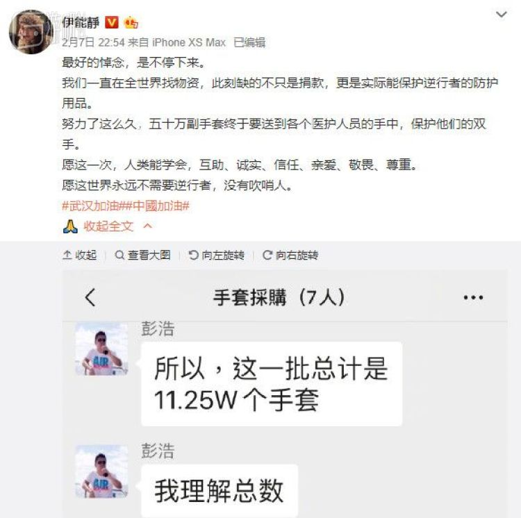
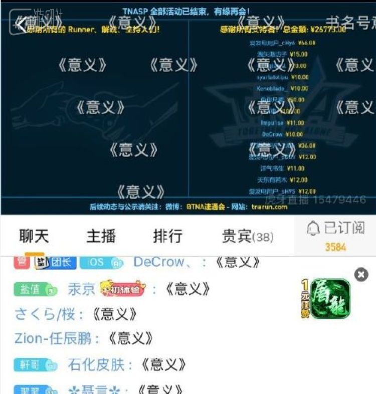

“人传人”确认之前，“物资告急”之后：一间武汉顶级医院的“战疫”
原文链接 备份链接 *************▲************* 2020年1月28日，武汉协和医院感染科病房。 （新华社/图） 全文共5066字，阅读大约需要7分钟。 从那时起，护士们戴的不再是常规的护士帽，换成了另一种蓝 …
就像《死亡搁浅》里做的那样，连接才能重建世界。
1
在阿风把两万六千余元善款打到武汉协和医院的账户上以后，TNA的直播结束了。
阿风是国内游戏速通组织TNA速通会的组织者。每年的十月份，TNA都会联系一些速通玩家（Runner），举行一个持续数天的大型速通表演赛，纯粹出于爱好。
在最早做TNA的时候，阿风就想过有一天像GDQ那样，在出于爱好的同时，也能做一些能够帮助到其他人的事情。
GDQ（Games Done Quick）是国外一个知名的慈善速通活动，创立于十年前。GDQ一年有两场固定的速通表演，其中一场是为癌症预防基金会筹款，另一场的收入会捐给无国界医生组织。十年来，GDQ总共筹集了超过2560万美元的善款。
一月底，新冠肺炎的疫情愈发严重，阿风和另外一位组织者书生觉得，TNA或许能做一次特别版的速通表演赛，专门为疫区筹款。在前两年的活动里，他们认识了不少runner，就拉了一个群问大家有没有兴趣做一场为武汉募款的活动。

因为很多runner因为疫情都留在了老家，没有平时能够同时支持速通和直播的设备，他们以为会比较难办。结果大家的反应很积极，阿风本以为凑不足一天的节目内容，很快就变成了18个项目，够直播两天。

找到了足够的runner，下一步是联系活动主持人。TNA邀请到了女王盐，还有之前的主持人老五。
老五是武汉本地人，当时刚脱离医学观察期不久。2月8日，TNA这期特殊节目开播的第一天，老五准备了一个特殊的开幕式。
他戴上口罩、骑着电动车去了趟户外，用手机给观众直播了现在的汉口。街道上空无一人，以往人满为患的汉口火车站和长途汽车站空空荡荡。最后，摄像头远远地看了一眼华南海鲜市场。
那两天的速通直播到很晚，除了《DOOM》《伊苏》《以撒的结合》这些常规项目，第二天还有runner给大家表演了《健身环大冒险》。速通是小圈子，整个慈善活动的最高人气和原来正常播时候差不多。但以往TNA办活动都亏本，这次他们的爱发电（一个粉丝赞助平台）里源源不断收到了数百笔支持，到最后一共有26773元。

为了协助TNA更好筹款，爱发电还专门设计了特殊通道
阿风提前联系好了武汉协和医院。速通结束后，他开启摄像头，当着观众的面把善款打进了医院的账户。但是因为医院太忙了，阿风暂时没有让医院开具反馈，“等疫情结束再说吧。”
书生很感慨。他负责TNA的技术支持，以往，速通圈基本都是凭借一腔热爱做活动，国内的组织成熟度也比不上国外，基本上就是个大家聚一起玩儿的行为。“看了那么多年的GDQ，看他们做了那么多的事情，这次才知道，国内速通圈的动员力比我们想象的要强的多。”
2
“动员力”，可能是这次疫情里所有民间救济行为中最关键的词。
水滴在一家电竞公司上班。因为提前在网络上看到疫情的消息，她过年没回南方老家，选择留在了北京。
大年二十九，武汉封城。同时大量湖北医院物资告急，在互联网上发布接受社会捐赠的消息。一开始她想捐钱，结果发现疫区最缺的是医疗物资，“就觉得什么也做不了，挺无力的”。
因为之前有做公益的经验，她被朋友拉进了一个支援武汉的志愿者群。群主联系到了一些武汉当地的车队，能够直接把物资定点捐到有需要的医院。虽然群里的志愿者们之前都没有这方面工作的经验，但很快就动员了起来。
群里有人去对接医院，审核医院的物资缺口信息，大概一共收集了一百多家医院的信息。一部分人负责对接物资，确保从厂家拿到的物资符合医院标准。最后，群里再组织车队送到武汉。水滴差不多每天要忙到两三点才能睡。

最开始，进武汉的物流还没出现限制，他们能直接把物资送进城里。但到后来，事情的进展有点出乎预料。先是有规定说物资到了武汉会被统一验收，水滴以为是物资由红十字会代收，可能会统一放到仓库里来不及发放。
结果再过了段时间，他们连物资过省都会受到阻碍。为了规避这种情况，水滴的团队想了对策，不直接说把货发到医院，而是运到当地的民宅，然后再通过网络找到当地的志愿者去拉货，送到有需要的医院。
1月26日，民政部规定外地慈善组织/志愿服务组织不得进入湖北
有一次，志愿团队联系到了一位武汉当地的司机Y。Y当天领了2000个口罩，要运往三家医院。结果第三家医院给错了地址，死活送不到。他只能顺路免费接送来往的医务人员，跑了一整天，只吃了一顿饭。
到了晚上的时候，Y告诉大家，他开始咳嗽了。他说，“我自己明天会送完这批货，就不要感染别人了。”
我问水滴，“那他现在确诊了吗？”
“不知道。再也没有联系过我们了。”
随着时间推移，联系物资也变得越来越难。刚开始水滴还能问到国内的厂家，后来厂家都被征用全部都归国家统一调配，团队就开始联系海外渠道，找包机、找物流、对接资源。
水滴最多的一次联系上了60万个口罩，是美国一家石油公司的储备，总价500多万元人民币。如果能有一家大机构马上为这批货买单，这60万个口罩马上就能送到中国。
但是没有。水滴只能定下了这批口罩，然后想办法去找一批小企业去凑这个钱。结果第二天早上，美国宣布所有本土航空公司前往中国的航班都停运。再然后，口罩厂商想要从石油公司收回那批被定下的口罩，水滴和口罩厂商展开了无止境的邮件Battle.
相应地，水滴的团队联系的医院，对物资的要求变得越来越低。刚开始捐助的过程中，湖北各大医院的要求还很高，口罩必须要求N95，连KN95可能都不能用。到后来，像黄冈、襄阳这种非重点地区的医院，物资越用越少，对规格几乎已经没有需求了。
因为要沟通物资，他们的志愿群里也进来了各式各样的人。发国难财的，骗口罩的骗子，坐地起价的微商……很多手里拿着口罩的微商在群里坐地起价，“关键是，你不买的话，这批货马上就没了”。
她对我说，疫情能彰显出人性特别本真的一面，包括公益组织在内。对很多慈善基金会来说，平时最大的问题是募款，但这一次募款太简单了，只要开一个通道，马上就会有很多钱进来。
但这些善款有没有都花出去？没人知道。水滴关注的一个基金会，募了特别多钱，但最后公示只捐了6台洗衣机和一点点口罩。
甚至就连医院也会产生这种“黑洞”。因为物资是消耗品，需要储备，医院也不知道某个数字的物资到底够不够用，就会一直不停地发物资紧缺的通告。
做了一个星期，志愿团队已经筋疲力尽。期间，可能是因为自动检测关键词的原因，水滴的微信还被封了两次，加上非公益组织的团体募捐可能有非法集资风险，团队就中断了直接捐助物资的运作，改为做信息对接。现在，水滴主要在企业、货源和医院之间做沟通，帮助物资落实到具体的地方。
她在业余时间做过很久的公益，跟我说以前那种透支的感觉，“其实你好像改变了什么，又什么也没改变。你在这里出点力，在别的地方就找补回来了，你太渺小了。”之后，她更愿意做点对点的帮助，确保每一笔捐赠都能帮助到一个切实的目标。
这几天，水滴已经在家恢复办公了。她很担心行业的未来。游戏还好，她所从事的电竞行业主要以线下为主，好不容易国家开始扶持了，又赶上了疫情。现在，线下禁止聚集，赛事全面停摆，所有人只能等。
与此同时，还会有亲戚朋友听闻她在做物资，跑过来问她，你那有口罩卖吗？
“我就很想说，我自己都没口罩呢。”水滴在通话里对我苦笑。
3
对很多民间的志愿者来说，“口罩”变成了他们在私力救济里的第一课。
彭浩是一名普通的腾讯员工。他在武汉大学念的书，爸妈也都在湖北。在在疫情开始逐渐严重时，公司里认识的很多湖北籍的员工都选择了春节留在深圳过年，没有回家。
当时有同事提议说，我们回不去，又是湖北人，能不能为家乡做点事？彭浩就牵头组织了一个民间志愿团队，主要是腾讯的员工和之前在腾讯工作过的一些朋友。
和水滴类似，彭浩的团队刚开始主要是自行开展物资捐助，最重头的物资就是口罩。为了筹钱，首先要有人负责出募捐的文案宣传，然后是找到靠谱的厂家、联系医院，还要有人负责在核实后把物资和有需求的医院做对接，整个团队到最后参与进来的差不多有一百来人。
部分湖北医院给彭浩团队的口罩接收函
在捐助过程中，志愿团队遭遇了很多问题。他们联系到有些供货方，会跟你说有几万个口罩，然后团队就要去核实，看有没有三证，再去找医院。但在疫情里，可能每个人都有热心，每个人都有爱心——却很难说动机或者目的，
彭浩遇到了很多中间商，会仰仗有独家拿货渠道，从志愿团队这里赚抽点，“厂商出过来只要两块三，卖给我们是两块五或者两块六。”
到了2月2号左右，因为国家把很多物资渠道征用了，加上做直接援助不够专业，彭浩的团队就开始转型做信息对接。
因为群里有很多腾讯的前员工，现在可能在做媒体、在别的企业做负责人，还有不少是创业的老板，私人资源比较丰富，确保了信息整合的有效性，大家基本上都会去找认识的、有信誉背书的熟人。
大疆有一位负责人想要捐4000个护目镜，因为曾经和彭浩合作过，就通过他的团队对接到了湖北的医院。加上团队里有很多湖北人，可以通过私人关系直接联系到当地，让他们团队可以确保在线下对医院和供货方进行确认和核实。
前几天，彭浩的群里进来了一个人，说自己是伊能静，想要捐物资。大家一开始都怀疑是不是本人，沟通后发现确实是伊能静的经纪团队，在国内外采购了很多物资，想要捐给需要的医院。
在沟通后，伊能静的经纪团队负责和工厂谈价钱签合同，彭浩的团队帮她看物资是否合规、帮他们联系信息列表里的医院，看哪些医院需要哪些物资，在发货后监督物流过程，确保捐赠方能拿到医院的接收函。上周，51.5万副医疗手套送到了医院的门口。

伊能静捐助后发的微博：“愿这世界不需要逆行者、没有吹哨人”
彭浩说，民间救援的一个价值点，就是民间渠道能够基于个人背书和信任，做好官方渠道的一个补位，确保能实际找到人。
“在灾难的面前，一个人的力量是很单薄的。捐个物资，要有人绘制表格、核实信息、对接资源……湖北的医院可能已经忙疯了，他们箭在弦上，没有时间也没有力量来做这些事情，就只能我们来做。”
疫情期间腾讯文档也推出了方便使用的特殊制式表格
4
截止到2月14日晚八点，根据丁香园疫情实时动态，新冠肺炎疫情今日全国新增确诊人数5107例，累计确诊63946例。
对比春节时期告急的情况，现在仍有大量湖北省内的医院在接受来自社会的捐赠，甚至包括新建的雷神山医院在内。
而这两天，很多地区的企业已经陆续开始复工。我所联系的志愿者们，只是疫情里的一部分普通人——和游戏行业相关的，在尽力帮助抗疫的普通人。彭浩的志愿组织还在维持信息对接平台，水滴那批被扣下的口罩还在协商，我们仍然不知道疫情会在哪天退去。
我想向阿风要一些TNA直播的画面放在文章里，看看在那次慈善速通里，网友们说了些什么。但因为录播软件出了点问题，阿风还在陆续捣鼓那两天的录像，只能给我发一些截图。我看到在直播最后，活动结束的画面里，很多弹幕刷起了“《意义》”。

“意义”一直是速通圈的一个梗。在一个游戏上花费大量精力，绞尽脑汁只为了节省一点点通关时间，经常会遭受一些诘问，“你们做这些有什么意义呢？”
至少这一次，他们有了确切的答案。
原文链接 备份链接 *************▲************* 2020年1月28日，武汉协和医院感染科病房。 （新华社/图） 全文共5066字，阅读大约需要7分钟。 从那时起，护士们戴的不再是常规的护士帽，换成了另一种蓝 …
原文链接 备份链接 医院人员领取志愿者送的医疗物资。受访者供图 文 | 李晓芳 编辑 | 胡大旗 新型冠状病毒肺炎疫情扩大后，湖北省内的医院医疗物资告急。从1月23日开始，很多医院自行发布物资募捐公告。几乎同一时间，各种民间力量行动起来， …
原文链接 备份链接 《战疫口述记》，是燃财经在新型冠状病毒肺炎期间推出的特别栏目，记录疫情亲历者的观察和感受。本文为第6篇，查看前5篇请点击《我和公司都快熬不住了》《节后返京，太太太南了》《我的“流浪”春节》《农村这样防肺炎》《我在武汉 …
原文链接 备份链接 什么拉长了社会捐赠物资从红十字会的仓库到疫情一线医务人员手中的最后短暂的路程？又是谁夺走了医生上战场的武器？ 记者 | 郭苏妍 叶雨晨 邓舒夏 王一越 编辑 | 张云亭 制图 | 程 星 2月1日，中国红十字总会工作 …
原文链接 备份链接 *************▲*************1月30日，海军军医大学医疗队三病区医护人员正在穿戴防护用具。（新华社 陈晨/图） 全文共*3590*字，阅读大约需要7分钟。 钟南山表态的前两天，政府部门连夜召 …